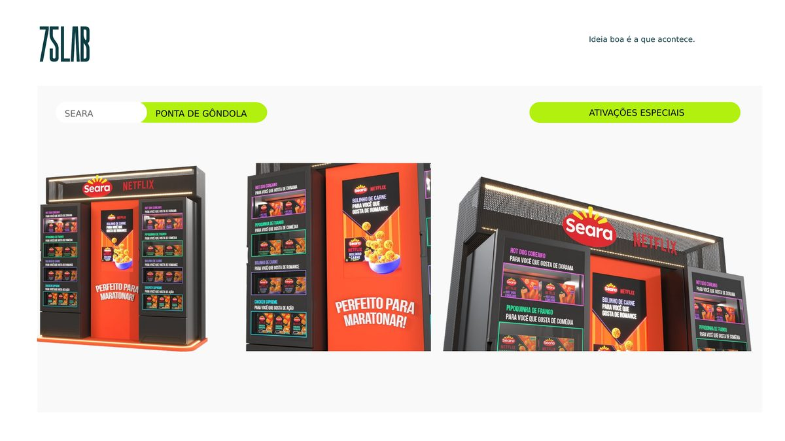
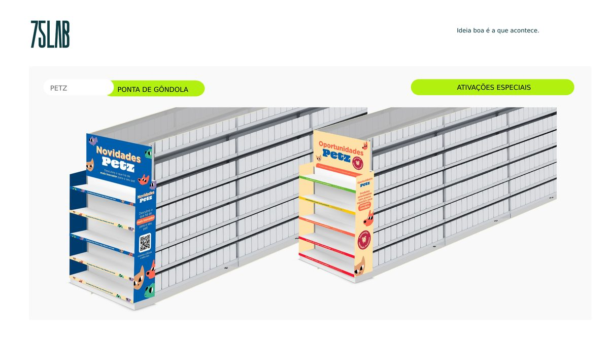
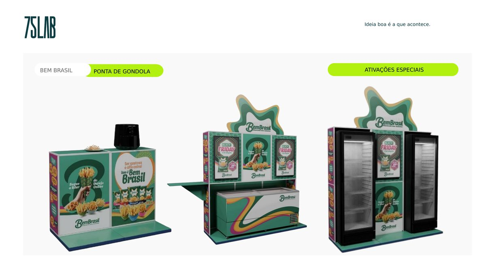
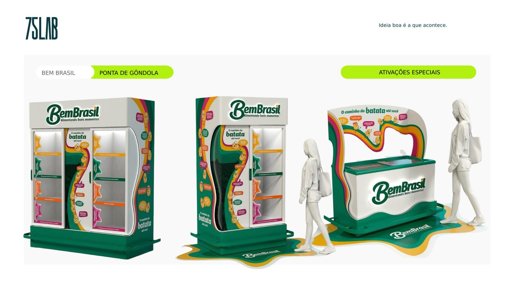

A 75 LAB projeta e produz ilhas promocionais, pontas de gôndola e o enxoval que vai com elas (testeira, régua, wobbler, stopper, adesivo de chão). Antes de produzir, a ilha ou a ponta aparece em tamanho real no corredor pelo celular, em realidade aumentada, para aprovar medida, leitura e circulação.
O que entregamos
- Ponta de gôndola com estrutura, testeira, laterais e régua de preço.
- Ilha promocional de várias faces, inclusive uma marca por face.
- Enxoval de gôndola: testeira, wobbler, stopper, faixa de gôndola, régua e adesivo de chão.
- Guia de implantação com foto de como a ponta deve ficar montada.
Ilha de quatro marcas, uma por face
Para a NGV, a ilha junta quatro módulos do Display Universal em 112 × 112 × 170 cm, com uma marca por face (Vitalitabs, De Llares, Bella Fio e Savedent). Duas faces usam prateleiras e duas usam gancheira, porque cada produto pede uma exposição. A ilha inteira pode ser vista em AR antes de produzir.
Pontas e ilhas que já saíram daqui





Perguntas frequentes
Qual a diferença entre ponta de gôndola e ilha promocional?
A ponta de gôndola fica na cabeceira do corredor e é vista de frente. A ilha fica solta no salão e é vista de todos os lados, por isso costuma ter três ou quatro faces e pede mais cuidado com estabilidade e circulação.
Quais peças formam o enxoval de uma ponta de gôndola?
Em geral testeira, laterais, régua de preço, wobbler ou stopper e adesivo de chão. O conjunto muda conforme a rede e o contrato de espaço, então o enxoval é definido junto com o guia de implantação.
Dá para ver a ilha no corredor antes de produzir?
Sim. A ilha é aberta em realidade aumentada, em tamanho real, pelo celular. Dá para conferir altura, leitura das marcas e se ela cabe no espaço negociado com a rede.
Como garantir que a ponta foi montada como no projeto?
Com QR na peça e página de montagem. O promotor registra foto e localização ao instalar, e a marca vê no painel quais lojas já estão com a ponta montada.